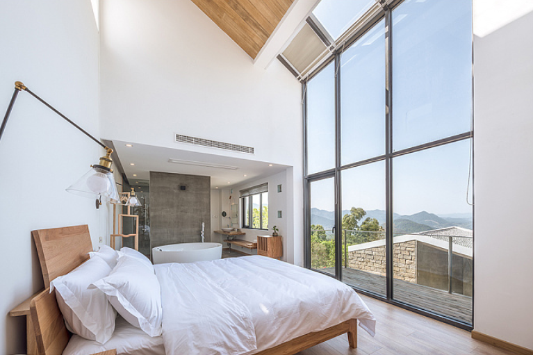
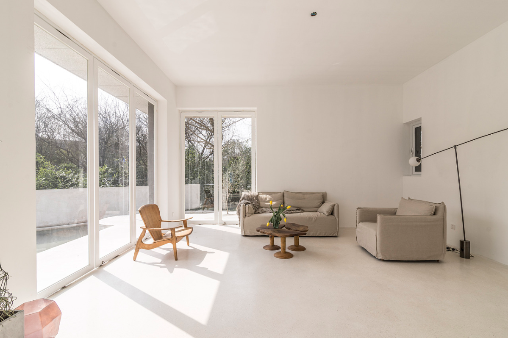
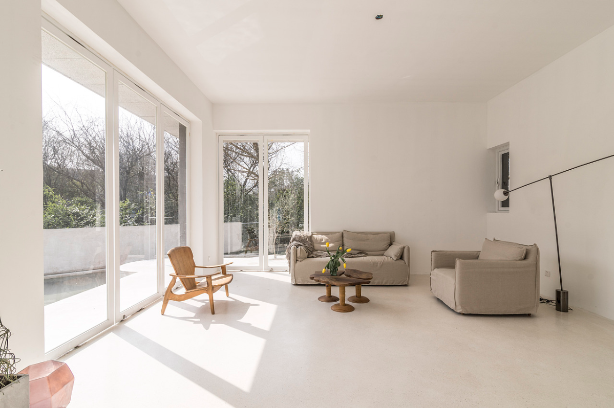

欢
迎
回
来
出门在外别住酒店住我家吧
温馨风

云南——客房展示
wifi覆盖 特调饮品空间与质感的时间叠加产生了一种蒙太奇拼贴，它是人对童真与舒适感回忆混合体，不连续但格外美好。
云南民宿是将视觉、情感以及思绪从日常生活中抽离的媒介，透过空间、光景，能让人体会到时间的质感
云南民宿是将视觉、情感以及思绪从日常生活中抽离的媒介，透过空间、光景，能让人体会到时间的质感
预约订购
清新风
 
云南——瓯北客房展示
wifi覆盖 特调饮品以美学空间为概念打造的The Being Lab，又名行为工作室，由两栋别墅打通重建，从空间结构到室内陈设，处处体现设计团队的审美意识。作为摄影取景空间，出片效果也极具艺术感。
两栋镜像的别墅构成，1500平米超大空间，包含地上三层、地下一层、一个花园和一个mini泳池，三层有宽敞的露台，可同时容纳多组拍摄.
两栋镜像的别墅构成，1500平米超大空间，包含地上三层、地下一层、一个花园和一个mini泳池，三层有宽敞的露台，可同时容纳多组拍摄.
预约订购